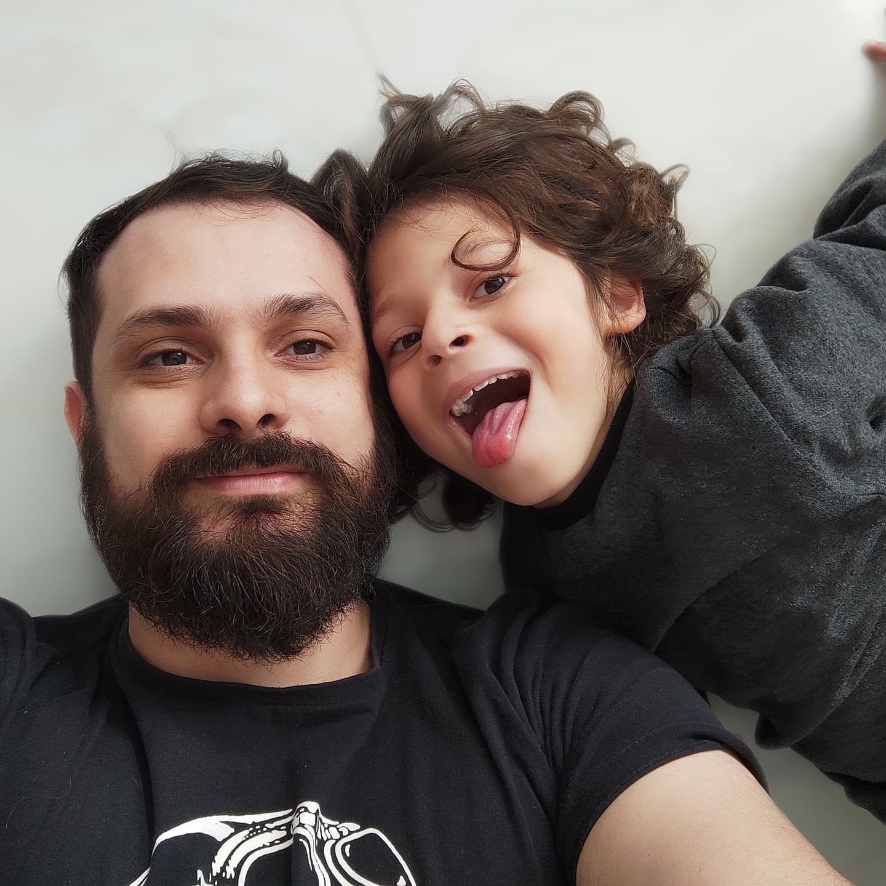

<link rel='stylesheet' type='text/css' href='../../assets/buttons.scss'>
<link rel='stylesheet' type='text/css' href='./carteira-nacional.template.scss'>
<link rel='stylesheet' type='text/css' media="print" href='./carteira-nacional.template.print.scss'>
<main>
    <section class="erro hide">
        <h1>Cadastro Nacional de Usuários de Cães Guia</h1>
        <h2>ERRO: registro não encontrado</h2>
    </section>
    <section class="carteira hide">
        <h1>Cadastro Nacional de Usuários de Cães Guia</h1>
        <div class="dados">
            
            <div>
                <h2>Nome do Usuário</h2>
                <p>Daniel de Adrade Varela</p>
                <h3>Nome do Cão</h3>
                <p>Edie</p>
                <h3>Instituição</h3>
                <p>Instituto Federam - Campus Camboriu</p>
                <h3>Instrutor</h3>
                <p>Marinês Kerber</p>
            </div>
        </div>
        <div class="validacao">
            <div class="info">
                <span>
                    Acesso o site <strong>https://caesguia.org</strong> para validar os dados deste documento, 
                    compare todos os dados, havendo divergecia favor entrar em contato com <strong>IFC Camboriu</strong>,
                    pelo fone <strong>+55 47 0800 0000</strong>.
                </span>
            </div>
            <div>
                <h3>CNUCG</h3>
                <p id="doc"></p>
                <h3>CPF:</h3>
                <p>053.621.709-29</p>
            </div>
            <div>
                <h3>Data da Emissão</h3>
                <p>07/07/2018</p>
                <h3>Hora da Emissão</h3>
                <p>07:30:70</p>
            </div>
            <canvas id="qr-code" width="300" height="300"></canvas>
        </div>
    </section>
    <div class="actions">
        <button class="bt-primary">
            imprimir
        </button>
    </div>
</main>